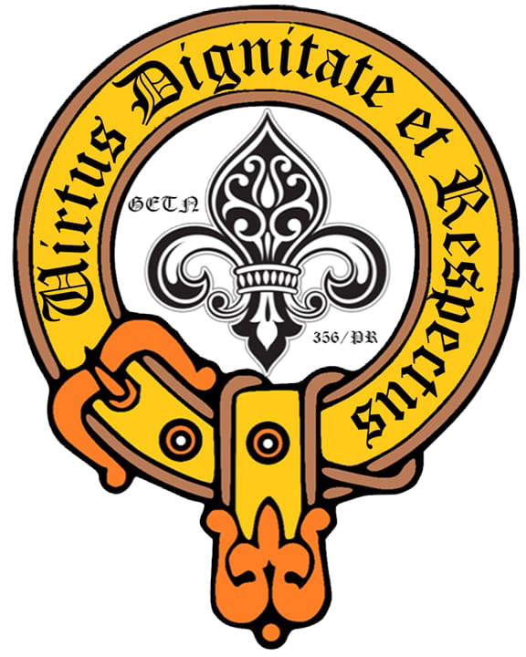

Site do Clã Nasua
Seja bem vindo ao site do Clã Nasua
Sobre o Clã
O Clã Pioneiro Nasua foi criado com o propósito de oferecer aos jovens um ambiente onde pudessem vivenciar plenamente o Ramo Pioneiro, desenvolvendo autonomia, liderança, espírito de serviço e compromisso com a comunidade. Sua fundação surgiu da necessidade de proporcionar uma continuidade na jornada escoteira dos jovens do Grupo Escoteiro Tartan Negro, mantendo vivos os valores do Movimento Escoteiro e fortalecendo o protagonismo juvenil.
Inspirado no quati (Nasua), animal conhecido por sua inteligência, curiosidade, capacidade de adaptação e vida em grupo, o Clã adotou esse símbolo como representação dos princípios que busca cultivar em seus membros. Desde sua criação, o Clã Nasua tem como missão formar pioneiros comprometidos com seu crescimento pessoal, com o serviço ao próximo e com a construção de uma sociedade mais justa e solidária.

Sobre o Grupo
O Grupo Escoteiro Tartan Negro foi fundado em 2020 por um grupo de chefes escoteiros que decidiu criar uma nova unidade do zero, inspirada na cultura e nas tradições da Escócia. Desde sua criação, o grupo busca preservar essa identidade temática em suas atividades, símbolos e valores, proporcionando aos seus membros uma experiência escoteira única e marcante.

Noticias do Clã


Membros do Clã

Matheus de Menezes
Atual Presidente da COMAD
- Jiujiteiro
- Futuro programador
- Jogador de RPG
- Namorado da Lele
- Nerd
- Escoteiro da Pátria

Isadora Ribeiro
Atual Vice Presidente da COMAD
- Apaixonada por Harry Potter
- Cursa Ciência da Computação
- Ama violão, RPG e Futebol
- Escoteira da Pátria

Luíza Rodriguez
- Irmã do Ber
- Atleta de Vôlei
- Futura Veterinária

Bernardo Rodriguez
- Irmão da Lu
- Gosta de RPG, Mangá e Videogame
- Futuro Radiologista
Projetos do Clã
Projeto Comunitário 2026
Ação organizada pelo Clã Nasua para apoiar a comunidade local, desenvolvendo serviço, liderança e trabalho em equipe.
Mutirão Ambiental
Limpeza e cuidado de uma área verde da comunidade.
AmbientalCampanha Solidária
Arrecadação de alimentos, roupas ou materiais escolares.
SocialTrilha Pioneira
Atividade de aventura com planejamento feito pelos jovens.
AventuraCorrida pela Insignia de B.P.

Matheus
0%

Isadora
0%

Luiza
0%

Bernardo
0%

Leticia
0%
